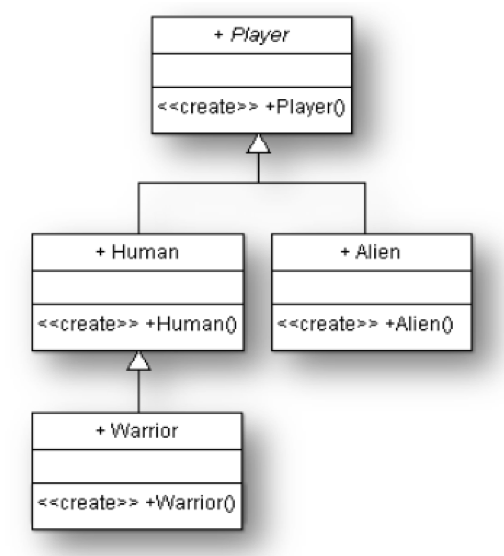
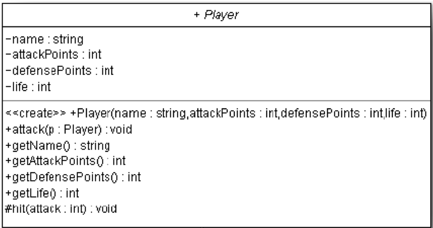
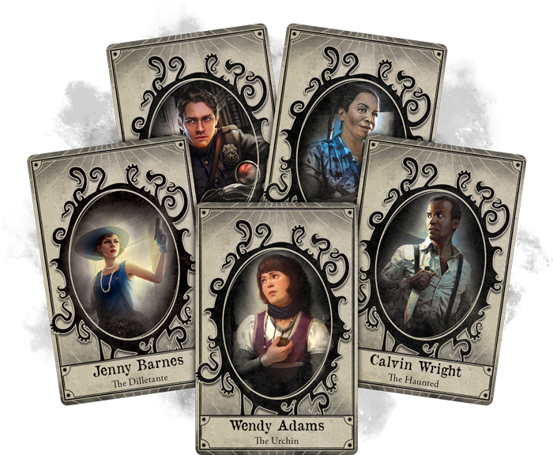
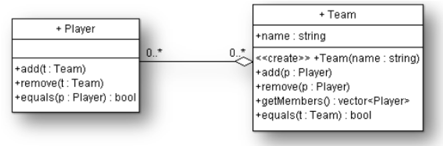
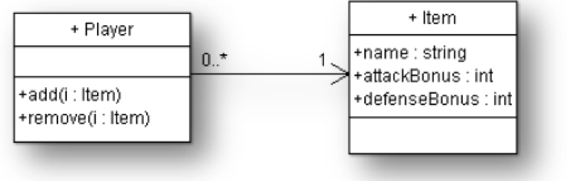
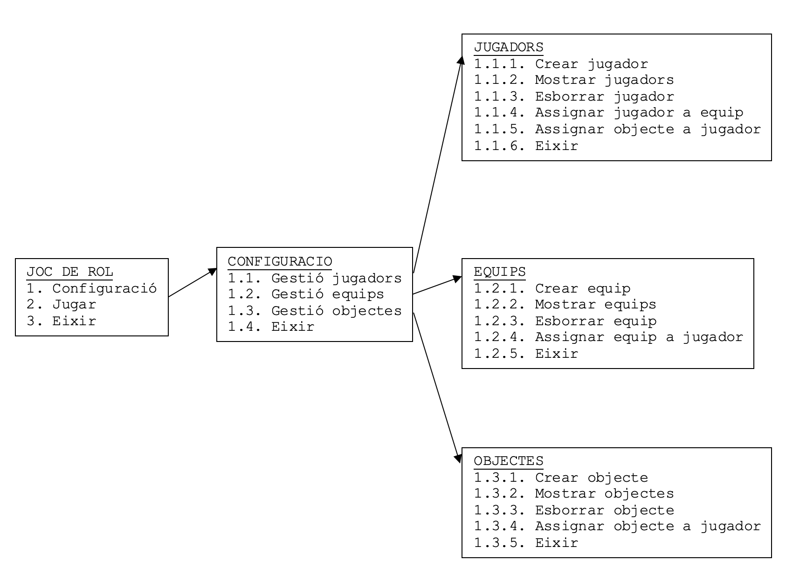

Joc de Rol
© Arkham Horror - El joc de Rol. Fantasy Flight Games \newpage
Generalitats
En aquesta pràctica anem a fer-la durant 3 entregues, de manera que anirem afegint-li funcionalitat a la mateixa. Per aixòp farem un poquet i acabem, farem altre poquet més i parem, i així fins a completar les 7 fases que consta la totalitat de la pràctica.
Per a desenvolupar-ho i no perdre res ho podem fer de dos maneres:
- 7 projectes distints en 7 carpetes distintes. Quan acabem la primera copiem i apeguem i a partir d'aquesta còpia fem la segona. D'aquesta manera quan acabem la fase n és l'inici de la fase n+1
- Fer servir GIT. De manera que ens posem a programar. Quan acabem cada fase fem un commit donant-li com a nom la fase en la que estem. Això ens permetrà tornar a cadascuna de les fases anteriors.
Entregues per Fases usant Git i GitHub
Aquest projecte es desenvoluparà i s'avaluarà en 3 fases distintes. Per que poder corregir les fases de manera independent, a banda de si el projecte final ja està acabat, anem a utilitzar les Etiquetes (Tags) de Git. Una etiqueta funciona com un marcapàgines exacte en la història del codi.
Inici del repositori
Pas 1: Crea el teu repositori a github.
Pas 2: Convidar al professor al repositori. Per a poder veure el vostre codi i avaluar-vos, heu de donar accés al vostre repositori en GitHub:
- Entreu en el vostre repositori en GitHub.
- Feu clic a la pestanya
Settings(Ajustos). - En el menú de l'esquerra, feu clic en
Collaborators(Col·laboradors). - Feu clic en el botó
Add people(Afegir persones). - Buscau l'usuari del teu professor de GitHub o el seu correu i envieu la invitació.
Treball diari (Commits normals)
Mentre treballeu en una fase, feu els vostres commits de forma habitual. És recomanable fer commits menuts i freqüents. També donar-li descripcions del canvis que feu en cada commit, per a que després sigui més fàcil recordar què heu fet en cada fase. Per exemple:
Nota: Podeu fer tots els commits que vulgueu dins d'una mateixa fase. No hi ha límit.
Ara ja estàs en disposició de continuar.
Final de fase i etiquetar
Quan considereu que una fase està 100% acabada i a punt per que l'avalúe, heu de posar una etiqueta a l'últim commit d'eixa fase. Imaginau que haueu acabat la Fase 1. Heu de:
- Crear l'etiqueta
- Pujar l'etiqueta a GitHub (¡MÉS IMPORTANT!). El comandament
git pushnormal NO puja les etiquetes a GitHub. Si només feu un push normal, l'etiqueta es quedarà en l'ordinador vostre i el professor no la podrà veure.
Recordatori: Que fer quan he acabat una fase?
El dia que acabeu una fase, els comandos exactes que heu d'executar en orde són:
| Bash | |
|---|---|
I que farà el profeessor per a avaluar-me?
Com a complement al funcionament dels repositoris pot resultar interessant saber com el professor va a avaluar-vos. El professor, per a avaluar-vos, farà el següent:
Pas 1: Descarregar el repositori (sols la primera vegada) si encara no ho ha fet
| Bash | |
|---|---|
Pas 2: Actualitzar els canvis i etiquetes. Viatjar en el temps a la fase a corregir
Si ja tenies el projecte descarregat, assegura't de baixar-te els últims canvis i les noves etiquetes que hagi pujat l'alumne:
| Bash | |
|---|---|
Al fer això (anar al passat), Git dirà un missatge una mica desagradable dient que estàs en un estat detached HEAD (cap separada). Això és normal. Només significa que estàs en mode només lectura. Pots executar el codi, provar-lo i veure'l, però no hauries de fer commits nous allà ni modificar-lo.
Pas 4: Tornar al present
Quan acabis de corregir la fase-1 i vulguis tornar a l'estat final del projecte (o preparar-te per a corregir una altra fase), només has de tornar a la branca principal:
| Bash | |
|---|---|
Resum
El flux de treball del professor serà el següent:
git fetch --tagsgit checkout fase-1(corregir fase 1)git checkout fase-2(corregir fase 2)- ... les fase que calguen
git checkout main(feina feta).
\newpage
Fase 1. Herència
Explicació general de la pràctica
Volem programar un joc de rol on es van a crear diversos jugadors. A aquests jugadors els anomenarem de manera genèrica Player. Al moment de jugar, es pot triar entre 3 tipus diferents de jugadors: humà (Human), guerrer (Warrior) o alienígena (Alien). Cada personatge té unes característiques pròpies, que són: els punts d’atac, els punts de defensa i els punts de vida i el comportament de cada jugador dependrà de la seua raça.
El joc consistirà en que els jugadors s'ataquen entre ells. Cada vegada que el jugador A ataca el jugador B, passen 2 coses, A colpeja Bi si B encara està viu, B colpeja A. És a dir, cada atac és un intercanvi de colps entre els dos jugadors.
Quan el jugador A colpeja a B es fa la resta entre els punts d’atac del jugador A i els punts de defensa del jugador B. Si el resultat és positiu, el jugador B perd esta quantitat de punts de vida. Si al jugador B encara li queden punts de vida (no està mort) es podrà defendre i colpejar a A. Quan els punts de vida d’un jugador arriben a zero, diem que és mort.
La relació dels diferents tipus de jugadors es mostra en el següent diagrama:

Com podem vore, un jugador Warrior és una especialització d’un jugador Human. Alien i Human són també una especialització de Player. Això ho podem aconseguir mitjançant l'herència.
La classe Player serà abstracta. És a dir, no podrem crear jugadors (objectes) d’eixa classe, sinó de les especialitzades, les quals es diferencien en:
Human→ No tenen bonificacions en defensa ni en atac.Alien→ Tenen bonificacions en cada atac però també penalitzacions en defensa.Warrior→ Poden aguantar més ferides que la resta de jugadors.
Tasques a efectuar:
-
Crea l’aplicació
JocDeRolamb els següents paquets (cas de Java). -
util: Per a les classes d’utilitats i de lectura escriptura de teclat i pantalla. Pots fer servir les subministrades al llarg del curs pel professor. joc: Per a les classesPlayer,Human,AlieniWarrior.-
inici: Per a la classeJocDeRol, amb el programa principal. -
Implementa en el paquet joc les 4 classes (
Player,Human,Warrior,Alien), amb les herències que pertoquen i amb els mètodes constructors per defecte corresponents, sense paràmetres. Els constructors, de moment, han de mostrar per pantalla el següent text:
| Bash | |
|---|---|
JocDeRol del paquet inici crea la funció provaFaseV1(), que ens ajudarà a entendre com funciona el mecanisme de l’herència. Eixa funció ha de crear un objecte de cada tipus (Human, Warrior i Alien). Abans de crear cada objecte avisarà per pantalla el tipus d’objecte que va a crear. En executar-ho, comprovarem que quan es crida al constructor d’una classe, es crida automàticament (i per ordre) a tots els constructors de les classes de les quals hereta.
Notes:
- A l'igual que
provaFaseV1(), també haureu de crear les funcionsprovaFaseV2(),provaFaseV3(), etc. per a cada fase, per a comprovar el funcionament de cada fase. Així, quan acabeu la fase 2, la funcióprovaFaseV2()serà la que us servirà per a comprovar el funcionament de la fase 2, i així successivament.main()sols cridarà a cada una de les funcionsprovaFaseV1(),provaFaseV2(), etc. per a comprovar el funcionament de cada fase. Així, quan acabeu la fase 2, main() sols cridarà aprovaFaseV2(), i així successivament.
Fi de la Fase 1
Fes els commits i etiquetatges que s'han explicat abans per a entregar la fase 1. Recorda que el nom de l'etiqueta ha de ser fase-1.
\newpage
Fase 2. Donant cos als jugadors
Explicació
Afegirem els atributs per a guardar els punts d’atac, defensa i vida, així com els mètodes necessaris per a atacar un altre jugador. El diagrama de classes quedarà de la manera següent:

Nota: Aquesta representació és del diagrama de classes de UML. A la qual, els camps i/o mètodes s'han de posar com:
- Es posa un
-quan l'atribut o mètode és private- Es posa un
+quan l'atribut o mètode és public- Es posa un
#quan l'atribut o mètode és protected
Es demana
-
Modifica la classe
Player: -
Afig 4 atributs:
name,attackPoints,defensePoints,life - Modifica el constructor per a passar-li els 4 atributs. Caldrà modificar també els constructors de les altres classes hereves.
- Afix els 4 mètodes getters corresponents per a consultar cada atribut.
- De moment no calerà afegir els setters, ja que no volem que es modifiquen les característiques d’un jugador un cop creat.
- Sobreescriu el mètode
toString()de la classeObjecten la classePlayer. Retornarà totes les dades del jugador amb el següent format:
| Text Only | |
|---|---|
- Afig el mètode void
attack(Player p), que s’utilitza quan un jugador vol atacar un altre. Quan un jugador A vol atacar un altre jugador B, es fa la cridaA.attack(B). Este mètode consisteix en que B siga colpejat per A (una crida al mètodehit()de B) i que, en cas de que B encara estigui amb vida li podrà tornar el colp, i A siga colpejat per B (una crida al mètodehit()de A).Has d'interpretar
hit()com a rebre un colp. Per això, quan A ataca a B, B és el que rep el colp, i per tant és el que crida al mètodehit(). De la mateixa manera, quan B ataca a A, A és el que rep el colp, i per tant és el que crida al mètodehit(). - Afig el mètode void
hit(int attackPoints):- Serà
protected(només accessible des de la classe i classes hereves), ja que només ha de cridar-se des del mètodeattack. - És cridat des del mètode
attack(dos vegades) per a dir que un jugador és colpejat per un altre amb tants punts d’atac. - El mètode ha de restar tants punts de vida com la diferència entre els punts amb què l’ataquen i els punts de defensa que té. Els punts de vida mai podran ser augmentats ni ser menors que 0.
- Mostrarà un missatge dient qui és atacat, amb quants punts l’ataquen, amb quants punts es defén, quanta vides tenia, quantes li’n lleven i quantes en tindrà finalment.
- Serà
- Abans i després de fer estes 2 accions, caldrà mostrar les dades de cadascun dels 2 jugadors. Per exemple:
Nota: les línies de l’atac les mostra el mètode
hiten les dos crides corresponents que es fan a aquest mètode.
- En la classe JocDeRol del paquet inici modifica la funció
provaFase(), que ens mostre el funcionament de la funció dels atacs. - Eixa funció ha de crear un objecte de cada tipus (Human, Warrior i Alien).
- Fer alguns atacs entre ells
- Comprovar en l’eixida que les puntuacions estan ben efectuades
Fi de la Fase 2
Fes els commits i etiquetatges que s'han explicat abans per a entregar la fase 2. Recorda que el nom de l'etiqueta ha de ser fase-2.
\newpage
Fase 3. Sobrecàrrega i Polimorfisme

© Arkham Horror, 3r Edició. Fantasy Flight GamesExplicació
Com hem dit abans, les classes hereves de Player són especialitzacions seues. És a dir: Player implementa un comportament genèric que cadascuna de les classes hereves pot modificar. Este canvi de comportament es pot realitzar bé afegint atributs i mètodes propis a la classe hereva o bé tornant a codificar algun dels mètodes de la classe heretada.
El polimorfime consistix en utilitzar el mecanisme de redefinició (overriding en anglés). Consistix en redefinir. És a dir: tornar a codificar el comportament heretat d’acord a les necessitats d’especialitació de la classe hereva.
En el nostre cas, volem tornar a codificar els mètodes necessaris a cada classse hereva per a aconseguir el següent comportament:
- Els jugadors de tipus
Humanno podran tindre més de 100 punts de vida i, per tant, s’ha de limitar esta característica al moment de la seua creació. - Els jugadors de tipus
Alienembogixen quan ataquen, però obliden la seua defensa. Quan unAlienataca, si no està greument ferit (punts de vida superiors a 20) augmenten en 3 els seus punts d’atac i disminueixen en 3 els seus punts de defensa. Si estan greument ferits (punts de vida iguals o inferiors a 20) es comporten de manera normal.
Nota: Els punts d’atac queden augmentats també després de l’atac (i també els de la defensa després de defendre), és a dir aquestes modificacions es mantenen.
- Els jugadors de tipus
Warrior, degut al seu entrenament, tenen una gran agilitat. Si el colp no és superior a 5 punts, aquest queda reduït a 0. El colp (hit) és la diferència entre l’atac que sofrix i la defensa del jugador.
Es demana
- Codifiqueu les classes
Human,AlieniWarrior, sobreescrivint els mètodes necessaris per tal que tinguen el comportament descrit anteriorment. - En la classe JocDeRol del paquet inici adapta la funció
provaFase()per a comprovar el funcionament. Eixa funció ha de crear, almenys, 3 jugadors de diferent tipus i mostrarà les seues dades. També ha d’incloure diversos atacs d’uns a altres.
Fi de la Fase 3
Fes els commits i etiquetatges que s'han explicat abans per a entregar la fase 3. Recorda que el nom de l'etiqueta ha de ser fase-3.
\newpage
Fase 4. Relacions entre classes
Explicació
Volem crear equips de jugadors amb la següent característica. Qualsevol jugador pot afegir-se a un equip. Un equip, per tant, és un conjunt de jugadors, i cada jugador pot pertànyer a més d’un equip.
El diagrama UML que representa esta associació entre les classes Player i Team és el següent:

És a dir: podrem afegir, esborrar i llistar els jugadors que pertanyen a un equip.
Ademès implementarem un nou mètode per a la realització de les comparacions : implementar el mètode equals.
La classe Team també tindrà el mètode toString() , que servirà per a retornar en forma de cadena els jugadors que formen l’equip.
Fixeu-vos que, quan un jugador s’afegeix a un equip, l’equip s’afegeix alhora a la llista d’equips del jugador. La relació Team-Player és bidireccional i, per tant, Player coneix els seus Team i Team coneix els seus Player.
Es demana
-
Crea la classe
Teamen el paquet joc, amb l’atributname: -
Crea el constructor, passant-li el nom de l’equip
- Per a implementar la relació entre classes definida al diagrama anterior, afegeix un atribut privat de tipus
ArrayList, anomenatplayers, i els mètodes que apareixen al diagrama per a afegir membres, llevar-los o bé consultar-los. - També caldrà incloure el mètode
toString()que retorne el nom de l’equip i les dades dels seus jugadors entre parèntesi. Per exemple:
| Bash | |
|---|---|
-
Afegir el mètode
equals. El criteri d’igualtat és el contingut de tot l’objecte. -
Modifica la classe
Player: -
Per tal que puguen afegir-se els equips d’un jugador caldrà afegir un atribut privat de tipus
ArrayList, anomenatteams, i els mètodes corresponents (per a afegir un jugador a un grup i per a llevar-lo). - Tin en compte que si assignes un jugador a un grup, automàticament s’ha d’assignar també el grup al jugador, i viceversa (vés en compte: no provoques recursió infinita). També per a llevar un jugador d’un grup.
- El mètode
toString()s’haurà de modificar per a retornar entre parèntesi la quantitat d’equips als quals pertany el jugador. Per exemple:
| Text Only | |
|---|---|
-
Afegir el mètode
equals. El criteri d’igualtat és el nom del jugador i els punts d’atac i defensa i la vida. -
En la classe
JocDeRoldel paquet inici adapta la funcióprovaFase()per a comprovar el funcionament de les últimes modificacions fetes. Eixa funció ha de crear alguns jugadors i equips. També ha d’assignar jugadors a equips, desassignar-los, etc. També ha de comprovar la igualtat entre algunsTeamiPlayer.
Fi de la Fase 4
Fes els commits i etiquetatges que s'han explicat abans per a entregar la fase 4. Recorda que el nom de l'etiqueta ha de ser fase-4.
\newpage
Fase 5. Més relacions
Explicació
Per tal d’afegir-hi interès, volem implementar en el nostre joc la possibilitat que els jugadors porten armes o escuts que modifiquen la seua capacitat d’atac i de defensa. Cada jugador pot portar múltiples armes, però cada arma pertany a un únic jugador. A dites armes i escuts les anomenarem Item
- Cada arma té un nom, un bonus d’atac i un bonus de defensa. Quan un jugador es dispose a atacar, ho farà amb la suma dels seus punts d’atac habituals més la suma de tots els bonus d’atac de les seues armes.
- De la mateixa manera, quan un jugador es dispose a defendre, ho farà amb la suma dels seus punts de defensa habitual més la suma dels bonus de defensa de totes les seues armes.
- Els bonus d’atac i de defensa poden ser negatius i, per tant, penalitzar al jugador.
- Les característiques individuals de cada tipus de jugador (Human, Alien i Warrior) no es modifiquen, sinó que es deixen igual que estaven.

Es demana
- Crea la classe
Itemen el paquet joc, amb els 3 atributs corresponents i un constructor al qual li passes els 3 paràmetres. -
Fes els canvis necessaris a la classe
Playerper a implementar el funcionament anterior. És a dir: -
Crea un vector d’ítems anomenat
items. - Implementa els mètodes
addiremoveper a afegir i llevar un ítem a un jugador. - A l’hora d’atacar o defendre, augmenta els punts d’atac o de defensa amb la suma dels punts dels items d’un jugador (modificacions en
atack()ihit()) - El mètode
toString()s’haurà de modificar per a retornar també els noms dels seus ítems amb els respectius bonus. Per exemple:
| Bash | |
|---|---|
- En la classe
JocDeRoldel paquet inici adapta la funcióprovaFase()per a comprovar el funcionament.
Fi de la Fase 5
Fes els commits i etiquetatges que s'han explicat abans per a entregar la fase 5. Recorda que el nom de l'etiqueta ha de ser fase-5.
\newpage
Fase 6. Configuració del programa principal i Excepcions
Explicació
En el programa principal (en la classe JocDeRol del paquet inici) definirem un ArrayList per a guardar els jugadors, altre per als grups i altre per a les armes. El que volem fer és tota la configuració de donar d'alta els jugadors, items i equips.

Es demana
Fer un programa amb menús que permeta generar tota la estructura del joc.
Menú Jugadors
Dins del menú de jugadors podríem tindre les següents opcions:
En esta opció crearem tots els objectes de l’aplicació. Per exemple, l'opció de crear jugador podria fer el següent:
- Preguntar el tipus de jugador (A, W, P), el nom i els punts d’atac (entre 1 i 100)
- Assignar els punts de defensa (PA + PD = 100) i els punts de vida inicials. Este valor serà igual per a tots els jugadors. Per tant, hauria d’anar com a
staticen la classe corresponent i es podria modificar en l’apartat de configuració. Per defecte, 100. - Crear el jugador i posar-lo en l’
ArrayListde jugadors, comprovant prèviament que no existia ja un jugador igual. 2 jugadors seran iguals si tenen el mateix nom. Caldrà implementar el mètodeequalsde la classePlayer.
Les altres opcions del menú de jugadors (listar, eliminar, etc.) també s’haurien de implementar. La seua funcionalitat és la que el seu nom indica. Per exemple, l’opció de eliminar jugador hauria de preguntar el nom del jugador a eliminar i, si existeix, eliminar-lo de l’ArrayList de jugadors.
Menú Equips
Dins del menú d’equips podríem tindre les següents opcions:
Les opcions a implementar són les que el seu nom indica. Per exemple:
- l’opció de crear equip hauria de preguntar el nom de l’equip a crear i, si no existia ja un equip amb eixe nom, crear-lo i posar-lo en l’
ArrayListd’equips. - L’opció d’assignar jugador a equip hauria de preguntar el nom del jugador i el nom de l’equip i, si existeixen tots dos, assignar el jugador a l’equip i viceversa.
Menú Ítems
Dins del menú d’ítems podríem tindre les següents opcions:
Les opcions a implementar són les que el seu nom indica, de manera similar al menú d’equips. Per exemple:
Jugar
Bucle on tots els jugadors van a pegar-se fins quedar sols un en vida:
- Es comprova que que hi ha almenys 2 jugadors vius. Si no és així, el joc acaba.
- Es tria de manera aleatòria quin jugador ataca i quin jugador és atacat.
- Pots fer servir un ArrayList de jugadors vius per a triar de manera aleatòria el jugador que ataca i el jugador atacat.
Excepcions
Crear i llançar (i capturar) les següents situacions anòmales al llarg del joc. Hauràs de crea les següents excepcions al projecte
- Un jugador mort no pot atacar ni ser atacat
- Un jugador no pot atacar-se a ell mateix.
- No podem llevar d’un equip a un jugador que no li pertany.
- Un equip no pot tindre jugadors repetits i viceversa.
Fi de la Fase 6
Fes els commits i etiquetatges que s'han explicat abans per a entregar la fase 6. Recorda que el nom de l'etiqueta ha de ser fase-6.
\newpage
Hasta el infitino y más allá
De manera addicional, pots tira-li imaginació i crea les teues normes!
- Pots crear més tipus de jugadors, més tipus d’ítems, etc.
- També pots crear un sistema de nivells per a cada jugador, o un sistema de punts d’experiència, o un sistema de classes (màgia, lladres, etc.).
- També pots crear un sistema de combats per equips, o un sistema de combats amb més d’un jugador atacant i més d’un jugador atacat.
- També pots crear un sistema de combats amb més d’una ronda, on els jugadors ataquen i defenen diverses vegades fins que un dels dos jugadors mor.
- També pots crear un sistema de manà, on alguns ítems consumeixen manà
- També pots crear un sistema de sort, on els jugadors tenen una probabilitat de fallar l’atac o la defensa.